Daniel Fusaro


I am a Ph.D. candidate in the Department of Information Engineering at the University of Padua, advised by Prof. Alberto Pretto and Prof. Emanuele Menegatti. I also collaborate closely with Prof. Loris Nanni.
My research focuses include Point Cloud Semantic Segmentation, Traversability Analysis, and Agricultural Robotics.
News
- [09/2025] - Finalist Best Paper Award at the 12th European Conference on Mobile Robots (ECMR) for the paper "ConUDA: Confidence-Guided Pseudo-Label Sampling for Unsupervised Domain Adaptation in 3D LiDAR Semantic Segmentation".
- [06/2025] - Honorable Mention at the 2nd Building3D Challenge of the 2nd Workshop on Urban Scene Modeling: Where Vision meets Photogrammetry and Graphics (USM3D), IEEE/CVF Conference on Computer Vision and Pattern Recognition (CVPR workshops).
- [07/2022] - 8th place at the National Finals of the CyberChallenge.
- [01/2014] - European FinalistZeroRobotics Competition.
Working Experience
|
|
Photogrammetry & Robotics Lab - University of BonnDuring my PhD visiting period at the University of Bonn, I had the privilege of collaborating with Professor Cyrill Stachniss and his team on different robotics projects. I contributed to the development of innovative methods for "Horticultural temporal fruit monitoring via 3d instance segmentation and re-identification using point clouds" and two datasets for horticultural monitoring. |
Intelligent Autonomous SystemI conducted research on perception and pose estimation algorithms for autonomous underwater vehicles (AUVs) as part of the SubEye project, in collaboration with SAIPEM S.p.A |
|
|
FlexSightI developed my master thesis by studying and implementing autonomous navigation systems for ground robotic vehicles, focusing on traversability analysis and 3D mapping. I worked extensively with sensors such as RGB cameras, 3D LiDARs, IMUs, and GPS. Additionally, I trained and evaluated various deep learning methods. |
Recent Publications
| 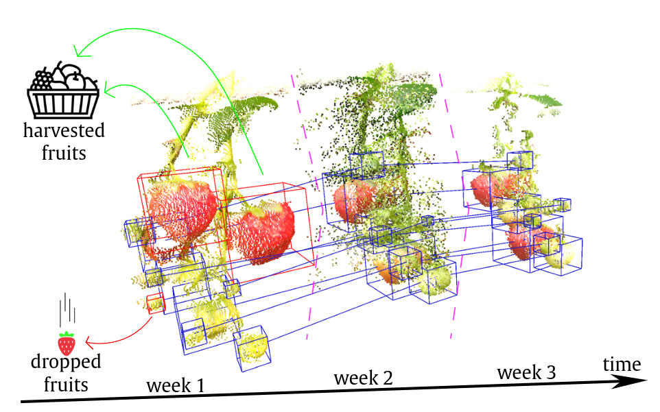 |
Horticultural Temporal Fruit Monitoring via 3D Instance Segmentation and Re-Identification using Colored Point Clouds
submitted to Computers and Electronics in Agriculture, 2025
|

| 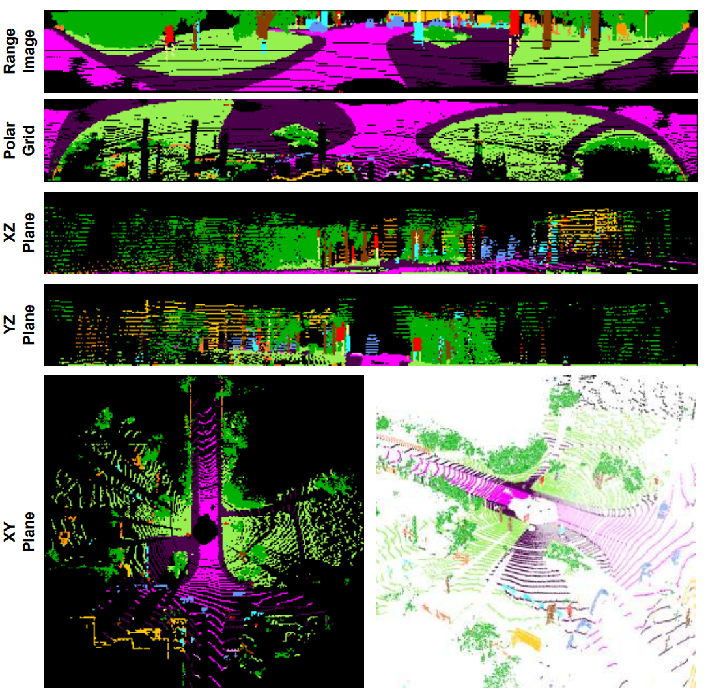 |
Point-Plane Projections for Accurate LiDAR Semantic Segmentation in Small Data Scenarios
Submitted to Computer Vision and Image Understanding, 2025
|
| 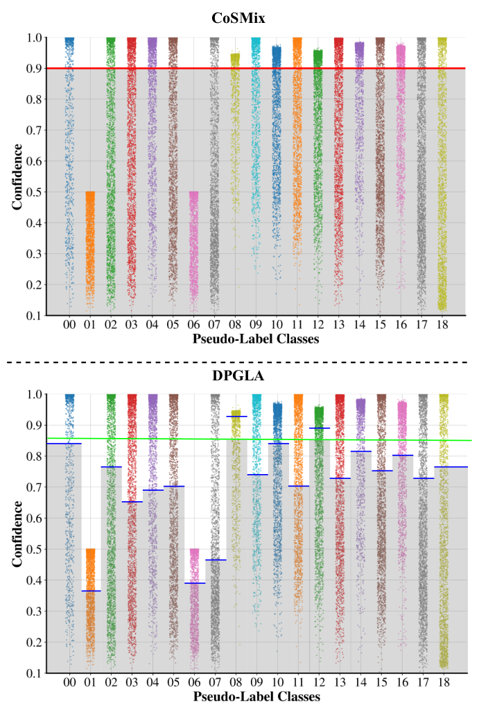 |
DPGLA: Bridging the Gap between Synthetic and Real Data for Unsupervised Domain Adaptation in 3D LiDAR Semantic Segmentation
Accepted for publication in IEEE/RSJ International Conference on Intelligent Robots and Systems (IROS), 2025
|
| 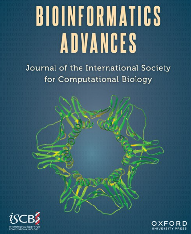 |
Matrix-Based Vector Representations in Neural Networks for Classifying Molecular Biology Data
Bioinformatics Advances, 2025
|
| 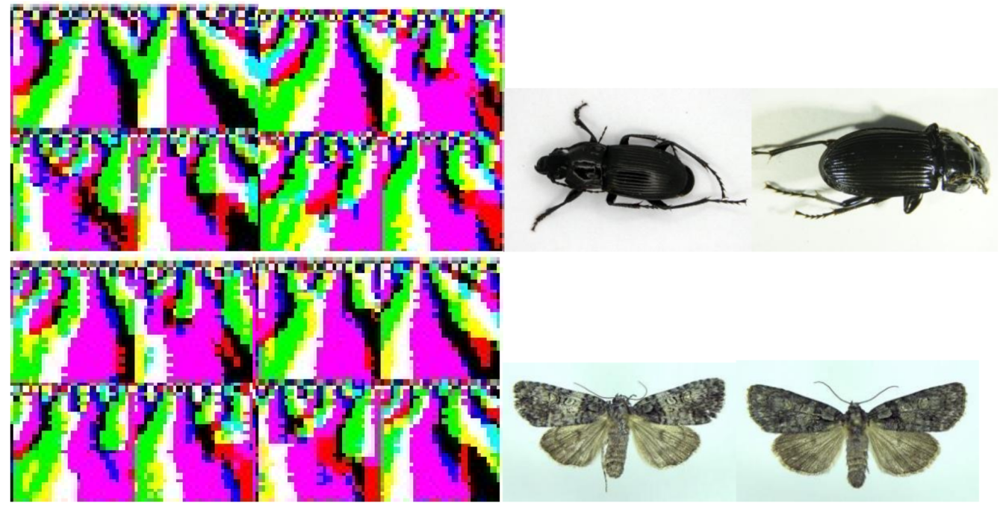 |
Insect identification by combining different neural networks
MDPI Expert Systems with Applications, 2025
|
| 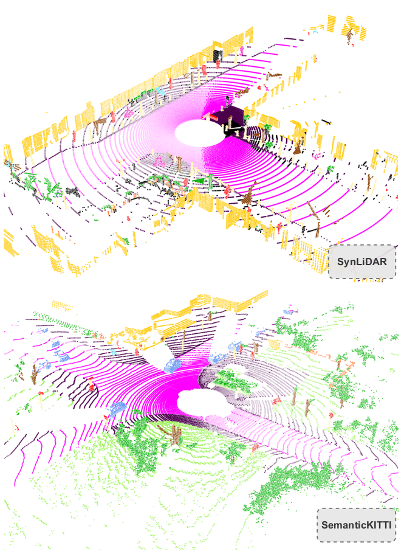 |
ConUDA: Confidence-Guided Pseudo-Label Sampling for Unsupervised Domain Adaptation in 3D LiDAR Semantic Segmentation
European Conference on Mobile Robots (ECMR), 2025
|
| 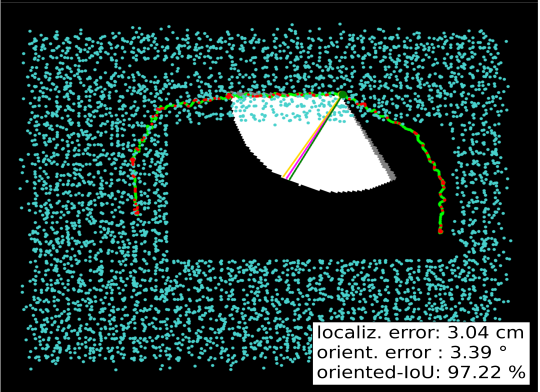 |
Real-time Underwater Place Recognition in Synthetic and Real Environments using Multibeam Sonar and Learning-based Descriptors
IEEE International Conference on Simulation, Modeling, and Programming for Autonomous Robots (SIMPAR), 2025
|
| 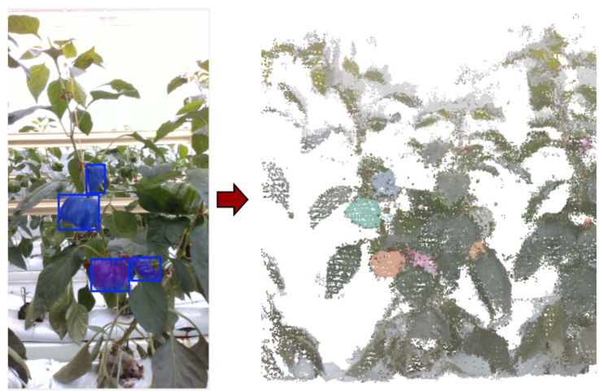 |
Spatio-Temporal Consistent Semantic Mapping for Robotics Fruit Growth Monitoring
IEEE Robotics and Automation Letters, 2025
|
|
Sample Size for Training and Testing: Segment Anything Models and Supervised Approaches
Advances in Intelligent Healthcare Delivery and Management, 2024
|
| 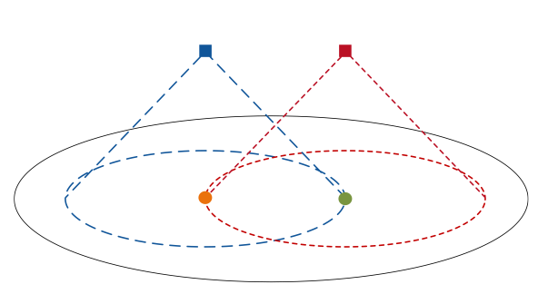 |
P-SVM2: Enhancing LiDAR-based Traversability Analysis with Augmented Point Cloud Descriptor for Autonomous Mobile Systems
IEEE Int. Conf. CISRAM, 2024
|
| 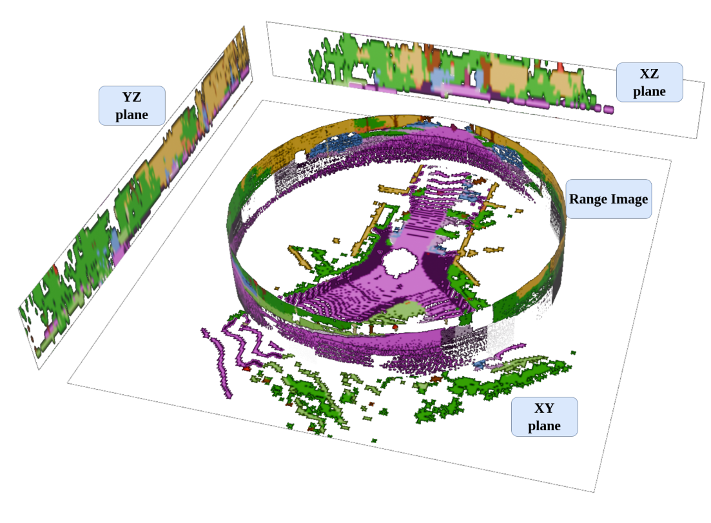 |
Exploiting Local Features and Range Images for Small Data Real-Time Point Cloud Semantic Segmentation
IEEE/RSJ International Conference on Intelligent Robots and Systems (IROS), 2024
|
| 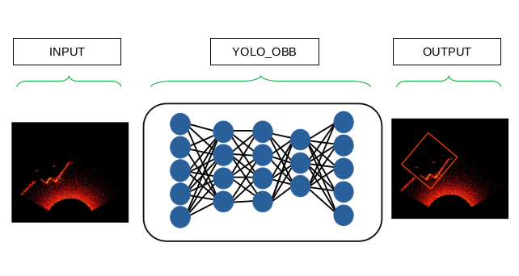 |
A Sonar-based AUV Positioning System for Underwater Environments with Low Infrastructure Density
IEEE ICRA Workshop on Field Robotics, 2024
|
| 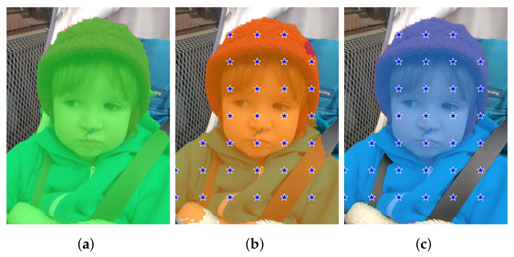 |
Improving Existing Segmentators Performance with Zero-Shot Segmentators
MDPI Entropy, 2023
|
| 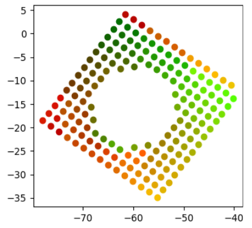 |
Improving Generalization of Synthetically Trained Sonar Image Descriptors for Underwater Place Recognition
IEEE International Conference on Computer Vision Systems, 2023
|
| 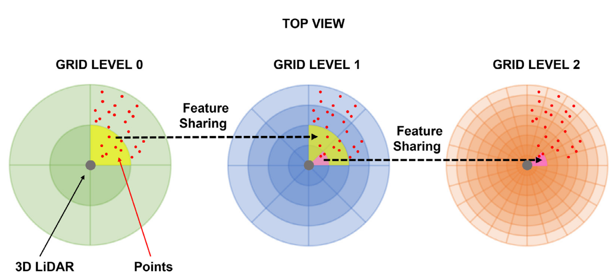 |
Pyramidal 3D feature fusion on polar grids for fast and robust traversability analysis on CPU
Robotics and Autonomous Systems, 2023
|
| 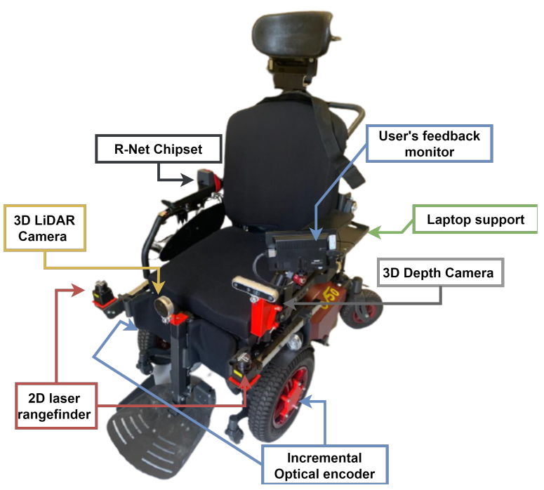 |
Real-time Free Space Semantic Segmentation for Detection of Traversable Space for an Intelligent Wheelchair
Int. Conf. on Rehabilitation Robotics (ICORR), 2022
|
| 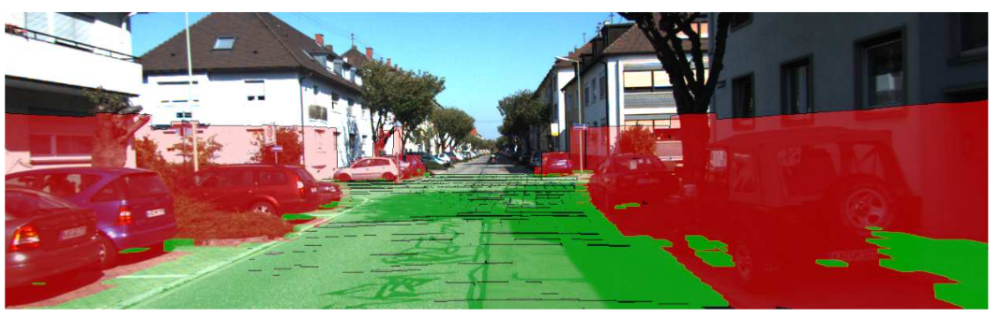 |
An hybrid approach to improve the performance of encoder-decoder architectures for traversability analysis in urban environments
IEEE Intelligent Vehicles Symposium (IV), 2022
Int. Conf. on Intelligent Autonomous Systems
 PDF PDF
|
| 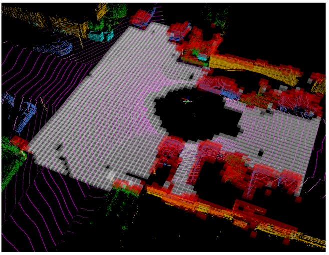 |
Pushing the Limits of Learning-based Traversability Analysis for Autonomous Driving on CPU
Int. Conf. on Intelligent Autonomous Systems (IAS), 2022
|
Teaching Activities
Complementary Lecturer (Didattica Integrativa)
-
Deep Learning - Università degli Studi di Padova2024/20252023/20242022/2023
Lecturer for Educational Robotics
-
Tutor for the course "Robotica Educativa e Coding"2025 - 15 hours, primary and middle school professors, I.C. Moroni, Vigodarzere
-
Tutor for the course "AI e Robotica per la scuola secondaria di primo grado"2025 - 20 hours, middle school professors, VII I.C. San Camillo, Padova
-
Tutor for the course "Robotica Educativa e Coding"2025 - 8 hours, primary and middle school professors, Istituto Barbarigo, Padova
-
Teacher for the course "Robotics And Python"2024/2025 - 15 hours, high school students, Liceo Lioy, Vicenza
Academic Services
Conference Reviewer
- IEEE International Conference on Robotics and Automation (ICRA)
- IEEE European Conference on Mobile Robots (ECMR)
- IEEE International Conference on Cybernetics and Intelligent Systems (CIS)
- IEEE International Conference on Robotics, Automation and Mechatronics (RAM)
- Intelligent Autonomous Systems (IAS)